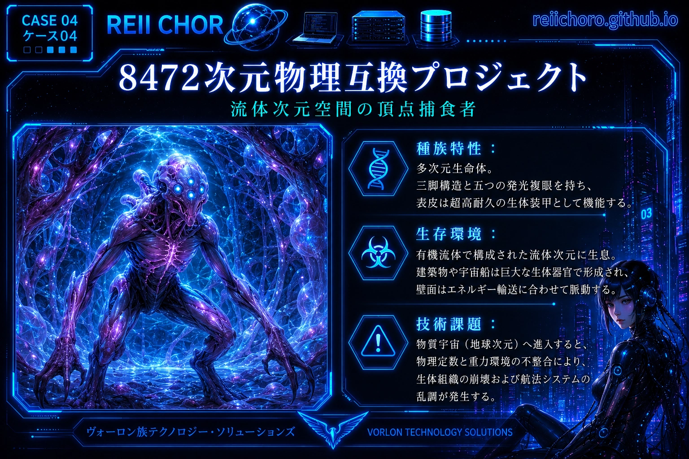
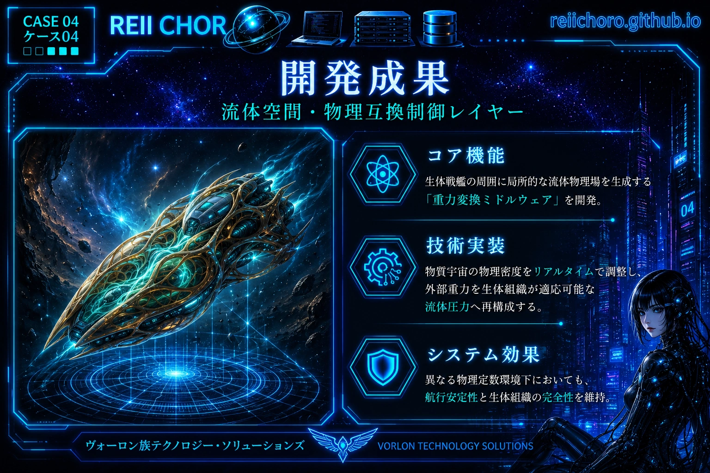
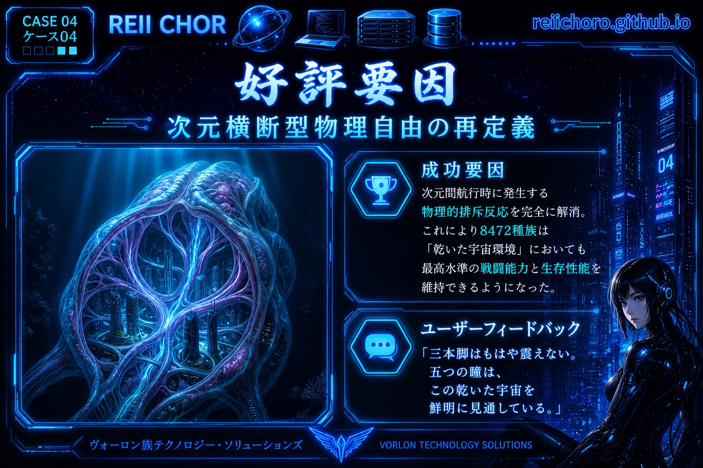

Part 01: 【クライアントプロファイル】—— 流体空間の頂点捕食者
三本足の構造と五つの冷光複眼を持つ次元間生物。その居住環境は純粋な有機流体次元であり、実体宇宙への進入時には物理定数の不互換によって生物組織に深刻な拒絶反応（ストレス反応）が生じることが多い。

Part 02: 【開発ソフトウェア】—— 物理シミュレーションミドルウェアと重力場調整システム
物理パラメータ互換レイヤーを開発し、生物宇宙船の周囲に局所的な流体物理場を生成。実体宇宙の重力抵抗を、生物体が適応可能な環境圧へと再エンコードするシステムを構築。

Part 03: 【高評価の理由】—— 次元を超えた物理的自由の定義
次元間航行における物理的拒絶反応を完璧に解決。クライアントからは、「三本の足はもう震えず、五つの眼はこの枯渇した宇宙をはっきりと捉えている」との高い評価をいただいた。